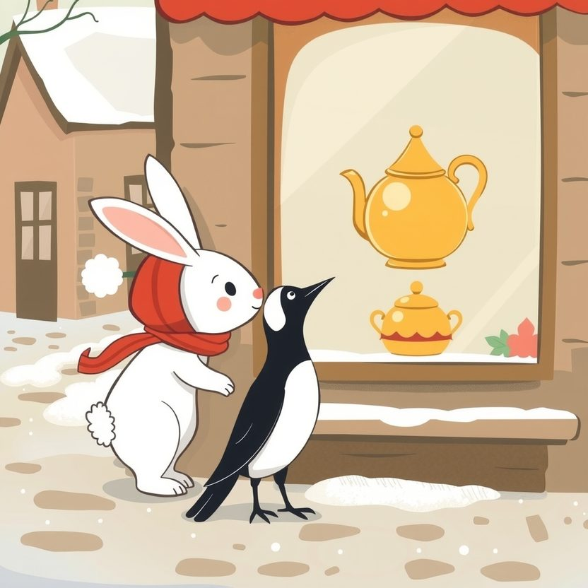

Titistoire › Les Étoiles (3-6 ans)
Rosie et l'écharpe trop longue
Une histoire de Rosie la lapine pour parler de : le cadeau fait avec le cœur.

▶ Écouter et regarder l'histoire
Gratuit, sans inscription : la voix lit, le texte suit mot à mot, les images tournent comme dans un album.
Le texte de l'histoire
Dans trois jours, c'est Noël. Rosie veut offrir à sa maman le plus beau cadeau de toute la forêt. Le museau écrasé contre la vitrine de Margot la pie, elle l'a déjà choisi : une théière dorée, qui reluit comme un petit soleil.
Crac ! Elle casse sa tirelire. Il en dégringole deux boutons, un caillou, et une seule piécette. La théière, elle, coûte cent pièces.
« Tu n'as qu'à le fabriquer, ton cadeau », suggère Pompon en montrant le panier de laine. Rosie hausse les épaules. Fabriquer ! Un cadeau fabriqué, ça ne brille pas.
Mais elle n'a pas le choix. Elle déniche une pelote de laine rouge, deux grandes aiguilles, et décide de tricoter une écharpe. « Un, deux, trois, partez ! »
Rosie tricote comme elle court : à toute vitesse. Clic clic clic clic ! Une maille à l'endroit, une maille de travers, une maille on ne sait pas trop.
Elle tricote le matin, elle tricote le midi, et le soir encore, cachée sous sa couverture avec la lampe. Les rangs, elle ne les compte pas. Elle a oublié qu'il fallait s'arrêter.
La veille de Noël, l'écharpe est finie. Rosie la déroule. Elle la déroule encore. Et encore. L'écharpe serpente tout autour de la chambre. Deux fois.
Trop longue. Bien trop large à un bout, toute maigrichonne à l'autre. Et en plein milieu bâille un trou, juste là où Pompon a éternué.
« Elle est moche », souffle Rosie. Et ses oreilles retombent, toutes molles.
Dehors, elle croise ses voisins. Les hérissons portent un paquet noué d'un ruban d'argent. Les écureuils, une boîte à musique en bois verni. Tout brille, tout est impeccable.
Rosie dissimule son écharpe derrière son dos. Ses joues la brûlent. « Maman méritait une théière dorée, marmonne-t-elle. Et elle va avoir… ça. »
Le soir, elle enfouit l'écharpe tout au fond du placard, sous un tas de vieilles chaussettes. « Je dirai que je n'ai pas eu le temps », décide-t-elle.
Le matin de Noël, tout le monde s'embrasse. Maman déplie le dessin de Pompon : un gros gribouillis vert. « Oh ! Un magnifique… sapin ? » « C'est toi, maman. » « Ah. Il est très ressemblant. »
« Et toi, ma Rosie ? » Rosie fixe le bout de ses pattes. « Moi… je n'ai rien, bredouille-t-elle. Je n'ai pas eu le temps. »
« Si, elle a ! claironne Pompon. Elle a fait un grand serpent rouge ! Il est dans le placard ! » Et avant que Rosie ait pu l'arrêter, le voilà qui revient en traînant l'écharpe derrière lui, dans une pluie de chaussettes.
Rosie voudrait disparaître sous le tapis. « Ne regarde pas, supplie-t-elle. Elle est ratée. Trop longue, et il y a un trou. Je voulais t'offrir la théière dorée, mais… »
Maman se tait. Lentement, elle promène ses pattes sur la laine. Sur chaque maille de travers. « Tu l'as faite toute seule ? Tous ces soirs où je voyais de la lumière sous ta couverture ? »
Rosie hoche la tête, toute penaude. Et là, elle découvre quelque chose d'étonnant : les yeux de maman brillent. Bien plus fort que la théière.
Maman enroule l'écharpe autour de son cou. Un tour. Deux tours. Il en reste encore, tout un ruban qui traîne par terre. Alors elle l'enroule autour de Rosie. Puis autour de Pompon.
« Regarde. Une théière, c'est pour une seule personne. Ton écharpe, elle nous tient chaud à tous les trois. Et le trou… » Pompon y passe la tête en gloussant. « C'est ma fenêtre ! »
Ils partent se promener dans la neige, tous les trois ficelés dans la même écharpe rouge. De loin, on jurerait un drôle d'animal à six pattes.
Ils passent devant la vitrine de Margot. La théière dorée est toujours là. Rosie tourne la tête. Oui, elle brille. Mais on dirait qu'elle a un peu froid, toute seule derrière sa vitre.
Tout l'hiver, maman porte l'écharpe. Pour aller au marché, pour étendre le linge, et même une fois pour dormir. Si quelqu'un lui fait remarquer qu'elle est trop longue, elle répond fièrement : « Elle est juste à la bonne taille. »
Et Rosie ? Elle a repris ses aiguilles. Clic… clic… clic. Plus lentement, en tirant la langue. Elle tricote des moufles pour Pompon. Pour l'instant, il y en a une. Avec six doigts.